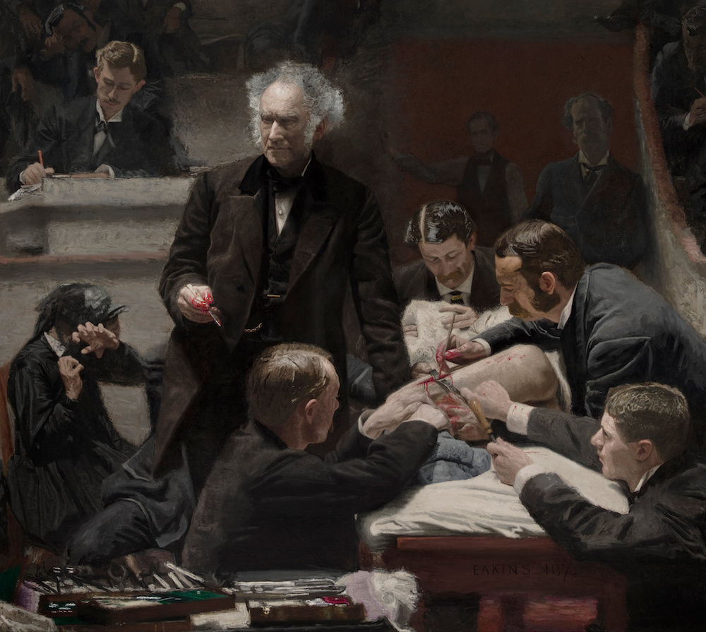

Oh F&!k: Please Send Backup

When you use the single-branch procedure instead of the multi-branch procedure... bad things happen.
Possible complications to all of this include:
-
Users who did not get the memo about the entire history of the repository being rewritten, who did not listen when they were told to clone a fresh copy, and who pushed directly to master even though they were told repeatedly not to, so then you end up with the entire old history being pushed to the remote. (Deal with this proactively by protecting the master branch!)
-
Accidentally carrying out the procedure multiple times, resulting in 2, 3, 4, even 5 copies of each commit, and the duplicate commits simply refuse to die;
-
A confusing, tangled, messy commit history that is completely uninterpretable
the first case: users pushing old history
When the git-commit-ectomy is complete, it is recommended that you turn on branch protection right away. But in case you did not, and a user pushed the old history to the remote, here is how to deal.
From a copy of the repository with only the new history
(this is going to be the copy of the repository that is
on the surgeon's computer, preferrably the repo in which
the git-commit-etomy was originally performed),
run the command git push origin master --force
(where origin is the remote with the duplicate history,
and master is the name of the branch you're pushing.
Replace these with whatever remote/branch names you are
using.)
Turn on branch protection immediately afterwards.
If you do not have a copy of the repository with only the new history (i.e., if you removed the copy of the repository in which the git-commit-ectomy was performed), you can still separate the old and new histories. However, you must have a copy of the old git log and/or the new git log, so that you have some way of knowing which commits belong to which history. If you have this info, continue on to "the second case."
the second case: scrubbling multiple attempts
If you have performed a git-commit-ectomy multiple times, and the duplicate commits are simply piling up and will not go away, you will need to use either a git rebase or a git cherry pick operation.
Find the branch that you want to keep, and the commit at which to start the new branch with the new history.
Then rebase or cherry pick any missing commits onto it.
Finally, remove all other branches on the remote.
Example: Suppose we are trying to fix the history
of the master branch, which is a mess, by creating
a new branch new_master that has an improved and
cleaned-up version of the master branch history.
We start by checking out the particular commit where
we wish new_master to diverge from master:
git checkout <hash-of-commit-to-split-at> # starting point for new branch
git branch new_master # create new branch
git checkout new_master # switch to new branch
Next, we modify the repository by making commits, doing git rebase and git cherry pick operations, and creating a new branch with a long and totally separate commit history from master.
...make some commits...
...rebase some stuff...
...cherry pick some stuff...
...now new branch has a long and totally different
commit history from master...
Finally, when the new_master branch is ready, push it
to the remote (e.g., origin):
git push origin new_master # push all the new stuff to remote "origin"
The last step is to delete all other branches except for
the new_master branch, so that we don't preserve the
messy history of the master branch. (The whole point of
the new_master branch was to clean it up.)
Deleting the master branch on the remote is a two step operation: first, delete the branch locally, then push the deleted "ghost branch" to the remote (which will propagate the deletion of the branch):
git branch -D master # delete git branch master locally
git push origin :master # propagate deletion of branch "master" to remote "origin"
Note the syntax for deleting a branch is:
git push <name-of-remote> :<name-of-branch-to-delete>
(If you have trouble removing the remote branches,
double-check your syntax is right, and make sure you
use the --force flag.)
the third case: a surgeon's nightmare
If you have an absolute clusterf--k of a commit history, you need a gifted surgeon. The more gifted the surgeon, the more of your repo history you'll be able to retain.
Here is a minimal-complications method that removes more of your history than you'd probably want.
The method here is to leapfrog a whole series of complicated splits, merges, rebases, and other tangles, and jump directly to a point in the repo where things are saner and calmer. This is done by creating two commits (two repo states) that are exactly identical, and which can be used as the source and destination of a git rebase operation.
To illustrate: suppose we have a tangled set of changes that all added or modified large files in the repository, and we wish to simply forget the whole thing ever happened. This method will leapfrog every commit between commit A and commit D.
The Tangled Mess (Before):
A B C D E (master)
o-------o-------o-------o-------o---o---o
\ / /
o---o---o---o /
\ \ /
o---o---o---o---o
The Fixed Mess (After):
D' E' (new_master)
o----o
/
/ (old history
o is removed)
A
We start by adding one new commit D' to the clusterf--ked branch. This will compress all of the changes between A and D into a single commit. The state of the repository at D' should match precisely the state of the repository at commit D:
D'
---------------------------------o
/
/ B C D E
A o-------o-------o-------o-------o---o---o
\ / /
o---o---o---o /
\ \ /
o---o---o---o---o
To do this, check out the repo commit where the clusterf--k is gone and when things are saner and calmer (that is, commit A):
git checkout <commit-hash-for-A>
Create a new branch at commit A, called new_master,
git branch new_master
git checkout new_master
Now, add a commit at A that will bring the repository into the exact same state as the (clusterf--ked) branch (that is, commit D). To do this, copy every single file present in the folder at commit D, into the repository staging area for commit D'.
You must copy every single file that is in that folder in commit D, excatly, word for word, character for character, into D'.
If any files are in A but not in D, those files are extra and can be left alone without a problem.
If any files are in D but not in A, you must add those files in when you create commit D'.
Once your staged commit D' matches the staged commit D, commit your changes. Tag these two commits, D and D', as your "stargates" - commit D is your stargate source, and commit D' is your stargate destination. These commits are linked because the repository is in exactly the same state between commit D and commit D'.
The last step is to rebase any commits that were made after the mess, that is, made after commit D, onto the new cleaner history. We do this using the syntax:
git rebase --onto <new-head-base> <old-head-base> <branch-to-rebase>
or, in terms of the stargate source and destination:
git rebase --onto <stargate-dest> <stargate-src> <branch-to-rebase>
or, in terms of commits D and D':
git rebase --onto D' D E
That allows you to take any commits made on D and rebase them onto D'. That way, you can throw away the messy part of the commit history but preserve all of the remaining commit history.
Note that you will lose all information about commits that are not rebased or cherry picked, i.e., all the commits that were involved with the clusterf--k.
The final state of the repo is:
D' E' (new_master)
o----o
/
/ (old history
o is removed)
A
Now delete the old master branch:
git branch -D master
git push origin :master --force
Finally, push the new_master branch to the remote:
git push origin new_master
Pat yourself on the back - you've successfully unf--ked the repository.